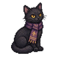
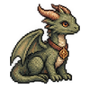
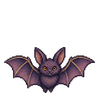

按主题整理 ChatGPT 对话，随时回看原文。



摘自 ChatGPT 的回答，未经核实。
导入自己的对话后可保存复盘。
对话保存在此浏览器。清理浏览器数据或换设备前，可下载备份。
将删除所有已导入的对话、索引和手动编辑。
备份包含原文、笔记和复习记录。
用 Chrome 或 Edge 扩展，把手动开启的 ChatGPT 对话同步到本地档案。
扩展只采集已加载的文字。首次采集日期可在原文页修改。
页面关闭时，扩展最多暂存 20 段待传对话，重新打开后补传。在扩展里暂停该对话可清除它的待传内容。